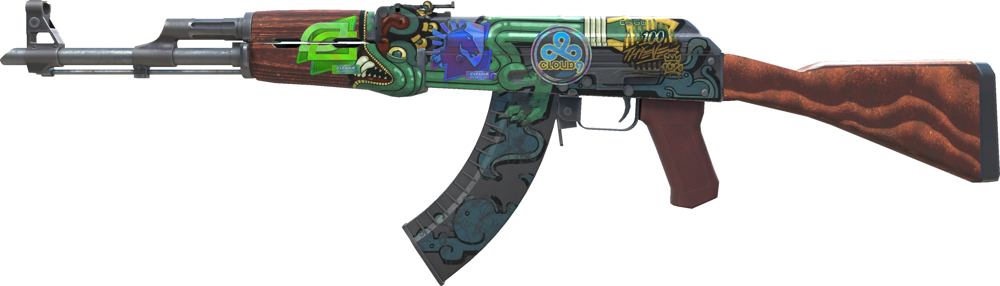
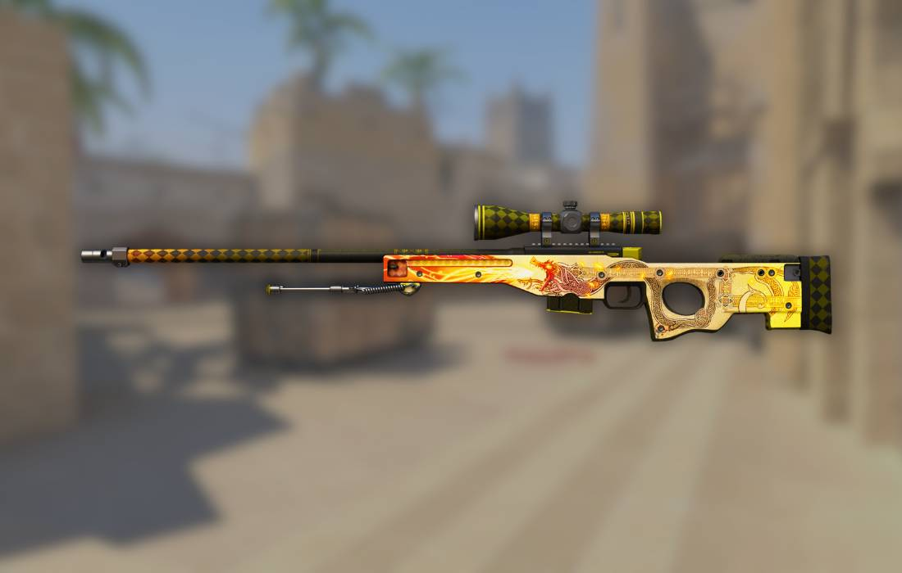
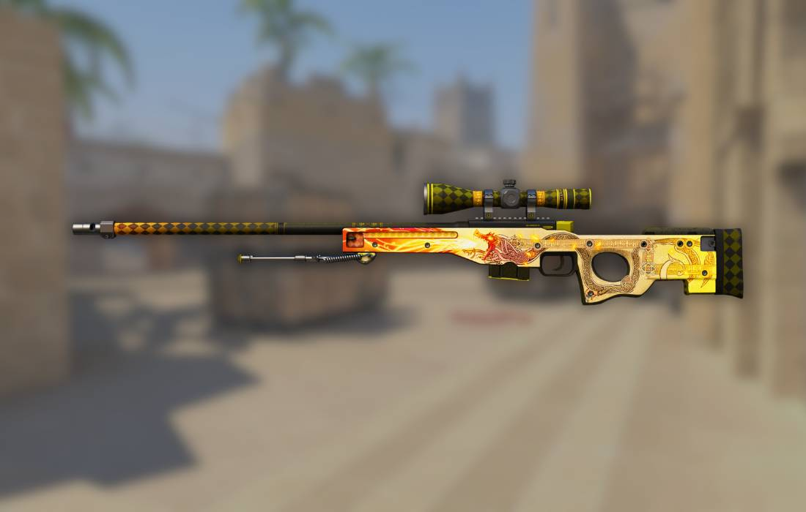
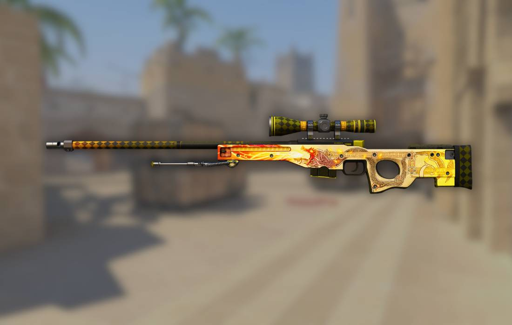

CS:GO Skins Market Analysis
My Favorites
Favorite CS:GO Skin Classes
- Knife Skins
- Butterfly Knives
- Karambit
- M9 Bayonet
- Rifle Skins
- Pistol Skins
- Glove Skins
Favorite Gaming Activities Outside of CS:GO
- Trading skins on community markets
- Watching professional CS:GO tournaments
- Researching new skin releases
- Creating skin analysis content
- Participating in skin trading forums
Favorite Gaming Events/Locations
- ESL One Cologne
- BLAST Premier
- IEM Katowice
- PGL Major
- DreamHack
Gallery of Favorite CS:GO Skins


 

